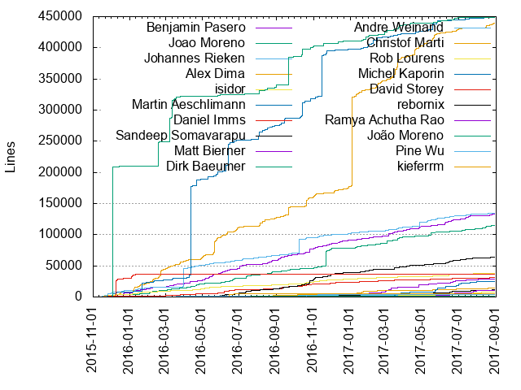
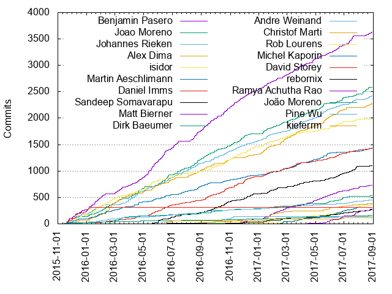

Authors
| Author | Commits (%) | + lines | - lines | First commit | Last commit | Age | Active days | # by commits |
|---|
| Benjamin Pasero | 3628 (15.85%) | 133099 | 105311 | 2015-11-13 | 2017-08-29 | 654 days, 22:06:14 | 439 | 1 |
| Joao Moreno | 2588 (11.30%) | 114150 | 188111 | 2015-11-14 | 2017-08-24 | 649 days, 11:19:34 | 359 | 2 |
| Johannes Rieken | 2422 (10.58%) | 134869 | 133670 | 2015-11-13 | 2017-08-29 | 655 days, 0:49:24 | 370 | 3 |
| Alex Dima | 2279 (9.96%) | 439286 | 478582 | 2015-11-16 | 2017-08-28 | 651 days, 10:37:00 | 365 | 4 |
| isidor | 1990 (8.69%) | 37680 | 27852 | 2015-11-16 | 2017-08-29 | 652 days, 2:03:58 | 349 | 5 |
| Martin Aeschlimann | 1435 (6.27%) | 449404 | 322409 | 2015-11-13 | 2017-08-29 | 654 days, 14:19:40 | 341 | 6 |
| Daniel Imms | 1428 (6.24%) | 30762 | 19350 | 2015-11-20 | 2017-08-28 | 647 days, 13:00:28 | 362 | 7 |
| Sandeep Somavarapu | 1104 (4.82%) | 63631 | 38274 | 2016-05-17 | 2017-08-29 | 469 days, 1:04:22 | 239 | 8 |
| Matt Bierner | 735 (3.21%) | 28560 | 24540 | 2016-09-14 | 2017-08-29 | 349 days, 2:47:34 | 197 | 9 |
| Dirk Baeumer | 531 (2.32%) | 449316 | 464124 | 2015-11-23 | 2017-08-28 | 644 days, 2:54:05 | 200 | 10 |
| Andre Weinand | 450 (1.97%) | 4532 | 2139 | 2015-11-18 | 2017-08-28 | 649 days, 1:51:48 | 262 | 11 |
| Christof Marti | 379 (1.66%) | 14792 | 6009 | 2016-07-05 | 2017-08-19 | 409 days, 5:01:39 | 140 | 12 |
| Rob Lourens | 374 (1.63%) | 7514 | 4545 | 2016-01-17 | 2017-08-29 | 589 days, 21:53:02 | 136 | 13 |
| Michel Kaporin | 313 (1.37%) | 24253 | 36716 | 2017-02-14 | 2017-07-31 | 167 days, 1:09:13 | 82 | 14 |
| David Storey | 310 (1.35%) | 36424 | 41308 | 2015-11-20 | 2016-01-11 | 52 days, 8:25:48 | 30 | 15 |
| rebornix | 281 (1.23%) | 11447 | 5438 | 2016-04-19 | 2017-08-29 | 496 days, 10:41:13 | 119 | 16 |
| Ramya Achutha Rao | 267 (1.17%) | 10584 | 5186 | 2016-11-02 | 2017-08-29 | 299 days, 1:46:14 | 73 | 17 |
| João Moreno | 159 (0.69%) | 1951 | 160 | 2015-11-18 | 2017-08-25 | 645 days, 22:45:11 | 109 | 18 |
| Pine Wu | 143 (0.62%) | 3473 | 2248 | 2016-09-06 | 2016-11-17 | 71 days, 23:26:57 | 37 | 19 |
| kieferrm | 120 (0.52%) | 5834 | 1628 | 2016-05-21 | 2017-08-24 | 459 days, 22:04:58 | 43 | 20 |
These didn't make it to the top: Alexandru Dima, Erich Gamma, roblou, bgashler1@users.noreply.github.com, Isidor Nikolic, t-amqi, Chris Dias, Sofian Hnaide, Amy Qiu, Ramya Rao, Joao, Yuki Ueda, hun1ahpu, Daniel Ye, Wade Anderson, Keegan Carruthers-Smith, Phil Price, cleidigh, katainaka0503, Denis Malinochkin, Krzysztof Cieślak, Don Jayamanne, Brad Gashler, sj.hwang, David Terry, xzper, Nick Snyder, Joel Day, Felix Becker, Eric Amodio, Dirk Bäumer, Cody Hoover, Kai Wood, Greg Van Liew, Belleve Invis, XVincentX, William Raiford, Peng Lyu, Cristian, tamas.kiss, Kai Maetzel, unknown, initialshl, chrmarti, NKumar2, chrisdias, Sean McBreen, Rishab, Phawin Khongkhasawan, David Wilson, Artem Govorov, pflannery, jordanmkasla2009, Sanders Lauture, Maik Riechert, Jens Hausdorf, Dustin Campbell, Bugra Cuhadaroglu, Oleg Mihailik, Jess Chadwick, Huachao Mao, David Lechner, misoguy, Thomas Townsend, Marcel Miranda, Krzysztof Cieslak, Ilie Halip, Fernando Tolentino, Eshwar Andhavarapu, Daniel Podder, Chirag Bhatia, Adrian Perez de Castro, Adam Stephenson, wim_spaargaren@live.nl, katainaka, jens1o, heycalmdown, Xaver Hellauer, Thomas Haakon Townsend, Tereza Tomcova, Sam Verschueren, Resi Respati, Nicola Fiori (JD342), Nagaraj, Matheus Cruz Rocha, Marc Kassay, Jonas Luebbers, James Ko, Giorgos Retsinas, Francois Valdy, Fabian Lauer, Eklavya Mirani, Ed Munoz, Dmitry Zabello, Christian Alexander, Ben Stein, sprinkle131313, rajkumar42, marktrz, mahmoud yousef, lucas.lra@gmail.com, ivanixgames, fadeevab, f111fei, be5invis, Yu-Hsin Hung, Yu, Sara Itani, Sandy Armstrong, Ryan Stringham, Pine, Phillip Johnsen, Noj Vek, Muhammad Habib Rohman, Mike Seese, Meai1, Marek Lewandowski, Lucas Araujo, Kewin Dousse, Jan Niklas Hasse, Ivan Zlatev, Guillaume Jenkins, Geir Sagberg, Denis Gladkikh, Christopher Leidigh, Charles Pierce, Bruce Mitchener, Basarat Ali Syed, Alex Soncodi, tomoki1207, rsafronov, mkosieradzki, kisstkondoros, kiricon, apwelsh, aniljava, aioute Gao, Yu Zhang, Young Rok Kim, Wim Spaargaren, William Esz, Will Prater, Tim Jones, Steven Clarke, Steve Baker, Sam El-Husseini, Ryan Patterson, Romanito, Rokas Gečas, Rohith Reddy Kumbharkar, Richard Natal, Rajkumar Janakiraman, Rafael Corrêa Gomes, Pouya Kary, Pierson Lee, Nathan Novielli, Michael Hudson, Maxime Quandalle, Matt Downs, Maryam Archie, Mark Pearce, Landon, Jordan Menard, Jonathan Edwards, Joe Martella, Joao Portela, Jeremy Loy, Jared Hester, Ivan Enderlin, Inori, Henk Mollema, Georgios Kalpakas, Gama11, Florent Viel, Eduardo Pinho, Dick van den Brink, Daniel Portella, Dan Mace, Dan Billingham, Coenraad Stijne, Chun Hei Ernest Wong, Christian Heilmann, Brenton Horne, Ashhar Hasan, Anton Vildyaev, Alexis Aubry, 柳东原 LIU Dongyuan, 一丝, Øyvind Kallstad, waisuikei, typicode, thomas michael wallace, tagniam, scheakur, rpjproost, mogemimi, markrendle, mappu, lslv1243, liunian, kheiakiyama, joao, iamchenxin, hikerpig, greams, gauss1314, evalphobia, eshizhan, daserge, cristianhosu, christian.oetterli, campersau, brokenbacon, barakd, anantoghosh, aefernandes, admosity, Yuya Tanaka, YukiUeda, Yuichi Tanikawa, YFdyh000, Wissam, Wagner Riffel, Vincent Sisk, Vakhurin Sergey, Vaclav Sobotka, Urban Dove, Treri Liu, Tomáš Hübelbauer, Tom Ross, Tobias Friemel, Tilman Vatteroth, Thomas Stringer, Thomas Rayner, Ted Piotrowski, Tamas Kiss, Steve Desmond, Stephan, Sorin Iclanzan, Soo Jae Hwang, Soney Mathew, Sjjad Hashemian, Sirisak Lueangsaksri, Simon Friis Vindum, Simon Chan, Shared Wollishofen, Shahmir Noorani, Shadowfacts, Seivan Heidari, Sebastien Pellizzari, Sebastian Zaha, Sean McCann, Sean Kelly, Scott Addie, Samuel Harrington, Sajjad Hashemian, Rômulo Guimarães, Ryan McNamara, Ryan Fitzgerald, Ryan Adolf, Ron Buckton, Roman Safronov, Roger, Robin Munn, Roberto Huertas, Robert Pethick, Ristomatti Airo, Rishii7, Richard Min, Renfred Harper, QwertyZW, Priit Haamer, Praveen Puglia, Phill Campbell, Philip Hannent, Peter V, Peter Juras, Peter Flannery, Pete Chown, Pavel Kolev, Paul van Brenk, Paul Oppenheim, Paul Faria, Pascal Borreli, PJ Meyer, Otger, Orta, Oleg Bulatov, Nikolai Vavilov, Nicolas Ramz, Nick Olinger, Nick Allred, Nic Holthaus, Munir Mastalic, Morag S, Mikhail Ivchenko, Mike Treit, Michael Chou, Michael, Maxwell Paul Brickner, Mattias Pernhult, Matteo, Matt Talbot, Matt Shirley, Matt Lott, Matt King, Matt Fehskens, Matan Kushner, Marvin Hagemeister, MaruyamaTomoki, Marcel Miranda Ackerman, Mani Ramezan, Maik Riechert (Brook Street), Mahmoud Ali, Magnus Hiie, Mackenzie McClane, Luke Hoban, Lorenzo Tilve, Logan Fleur, Lambdac0re, Ladislau Szomoru, Kei Son, Kazuyuki Sato, Kate Miháliková, Kaloyan Raev, Kaide Mu, Jun Han, Joshua Wester, Joshua Granick, Josh Peng, Josh Goldberg, Jonathan Carter, John Rothfels, Joel Bennett, Joe Skeen, Joe Foster, JimiC, Jeong Woo Chang, Jason Foreman, Jan Krems, Jan Karger, Jakub Synowiec, Jake Lee Kennedy, Jacob Lambert, J/A, Ivan Samoylenko, Ishan Arora, Ioan CHIRIAC, IOKLO, Hugo Duthil, Hernan Y.Ke, Hearstzhang, Hasan Ali, Harry Mallon, Hammy Havoc, Grant Mathews, Georgios Andreadis, Garrett Serack, Fu** Yeah, Fred Bricon, Frank Yuan, Felix Rieseberg, Felipe Sateler, Faustino Aguilar, Fabien Lasserre, Eric Lawrence, Elias Winberg, Duroktar, Drazen Dotlic, Douglas Eccker, Dominic Valenciana, David Hollinger III, David Hewson, Daniele Lupo, Daniel Jost, Daniel Hritzkiv, Dan Silver, Daan Schipper, Cătălin Mariș, Cristian Hosu, Collin Grimm, Cliff Koh, Claudio Cicali, Christian Svensson, Chris Bentivenga, Carlo Bottiglieri, Caio Proiete, Burak Can, BrokenBacon, Brian Schlenker, Brandon Ruggles, Brady Holt, Bradley Meck, Binsztock Rémy, Benjamin Zarzycki, Benjamin Gerfelder, Beatriz Magalhães, Beatriz Magalhães, Bae Hyun Seung, Ashutosh Dhundhara, Arthur Ozga, Arkady Shapkin, Anthony Sottile, Anjali Fernandes, Andy, Andrii Melekhovskiy, Andrey, Andrew Stitcher, Andrew Arnott, Andrea Spadaccini, Andrea Grieco, Anand Dyavanapalli, Amadare42, Alex Hirsch, Aldo Fregoso, Akash, Agetorp, AJ Kerrigan
Only top 20 authors shown
Only top 20 authors shown
| Month | Author | Commits (%) | Next top 5 | Number of authors |
|---|
| 2017-08 | Joao Moreno | 135 (15.86% of 851) | Alex Dima, Benjamin Pasero, Johannes Rieken, Martin Aeschlimann, Matt Bierner | 55 |
| 2017-07 | Benjamin Pasero | 172 (15.13% of 1137) | Sandeep Somavarapu, Johannes Rieken, Rob Lourens, Ramya Achutha Rao, Joao Moreno | 51 |
| 2017-06 | Benjamin Pasero | 142 (9.87% of 1438) | Alex Dima, isidor, Joao Moreno, Sandeep Somavarapu, Ramya Achutha Rao | 63 |
| 2017-05 | Alex Dima | 180 (12.75% of 1412) | Johannes Rieken, Joao Moreno, Benjamin Pasero, Martin Aeschlimann, Matt Bierner | 70 |
| 2017-04 | Benjamin Pasero | 134 (15.21% of 881) | Johannes Rieken, Matt Bierner, Joao Moreno, Alex Dima, Martin Aeschlimann | 58 |
| 2017-03 | Benjamin Pasero | 166 (12.23% of 1357) | Alex Dima, Johannes Rieken, Joao Moreno, Daniel Imms, Martin Aeschlimann | 59 |
| 2017-02 | Alex Dima | 133 (12.44% of 1069) | Benjamin Pasero, Matt Bierner, Joao Moreno, isidor, Martin Aeschlimann | 54 |
| 2017-01 | Alex Dima | 159 (11.84% of 1343) | Benjamin Pasero, Joao Moreno, Johannes Rieken, Matt Bierner, isidor | 50 |
| 2016-12 | Benjamin Pasero | 144 (16.02% of 899) | isidor, Daniel Imms, Johannes Rieken, Sandeep Somavarapu, Alex Dima | 54 |
| 2016-11 | Benjamin Pasero | 201 (17.72% of 1134) | Joao Moreno, isidor, Daniel Imms, Johannes Rieken, Sandeep Somavarapu | 44 |
| 2016-10 | Benjamin Pasero | 207 (18.37% of 1127) | Johannes Rieken, isidor, Daniel Imms, Sandeep Somavarapu, Joao Moreno | 46 |
| 2016-09 | Benjamin Pasero | 229 (20.23% of 1132) | Joao Moreno, Daniel Imms, Alex Dima, Johannes Rieken, isidor | 40 |
| 2016-08 | Benjamin Pasero | 197 (19.09% of 1032) | Joao Moreno, Johannes Rieken, Alex Dima, Martin Aeschlimann, Daniel Imms | 44 |
| 2016-07 | Benjamin Pasero | 134 (17.45% of 768) | Joao Moreno, Johannes Rieken, isidor, Martin Aeschlimann, Sandeep Somavarapu | 45 |
| 2016-06 | Benjamin Pasero | 254 (20.53% of 1237) | Joao Moreno, Johannes Rieken, Daniel Imms, Alex Dima, isidor | 43 |
| 2016-05 | Benjamin Pasero | 297 (29.26% of 1015) | isidor, Alex Dima, Johannes Rieken, Daniel Imms, Joao Moreno | 23 |
| 2016-04 | Joao Moreno | 168 (18.96% of 886) | Johannes Rieken, Benjamin Pasero, isidor, Martin Aeschlimann, Daniel Imms | 42 |
| 2016-03 | Benjamin Pasero | 161 (18.19% of 885) | Alex Dima, Joao Moreno, Johannes Rieken, isidor, Dirk Baeumer | 32 |
| 2016-02 | Alex Dima | 212 (23.85% of 889) | isidor, Joao Moreno, Benjamin Pasero, Martin Aeschlimann, Daniel Imms | 31 |
| 2016-01 | Benjamin Pasero | 217 (21.64% of 1003) | isidor, Johannes Rieken, Alex Dima, Joao Moreno, Martin Aeschlimann | 24 |
| 2015-12 | David Storey | 168 (19.95% of 842) | Benjamin Pasero, Johannes Rieken, isidor, Joao Moreno, Martin Aeschlimann | 35 |
| 2015-11 | Benjamin Pasero | 105 (18.88% of 556) | Joao Moreno, David Storey, Johannes Rieken, isidor, Martin Aeschlimann | 45 |
| Year | Author | Commits (%) | Next top 5 | Number of authors |
|---|
| 2017 | Benjamin Pasero | 1083 (11.41% of 9488) | Alex Dima, Joao Moreno, Johannes Rieken, Matt Bierner, Daniel Imms | 231 |
| 2016 | Benjamin Pasero | 2274 (18.94% of 12007) | Joao Moreno, Johannes Rieken, isidor, Alex Dima, Daniel Imms | 217 |
| 2015 | Benjamin Pasero | 271 (19.38% of 1398) | David Storey, Johannes Rieken, isidor, Joao Moreno, Martin Aeschlimann | 63 |
| Domains | Total (%) |
|---|
| microsoft.com | 16999 (74.25%) |
|---|
| gmail.com | 4437 (19.38%) |
|---|
| tyriar.com | 399 (1.74%) |
|---|
| joaomoreno.com | 196 (0.86%) |
|---|
| users.noreply.github.com | 195 (0.85%) |
|---|
| outlook.com | 70 (0.31%) |
|---|
| kaporin.com | 47 (0.21%) |
|---|
| live.com | 32 (0.14%) |
|---|
| yahoo.co.jp | 29 (0.13%) |
|---|
| diasfam.com | 26 (0.11%) |
|---|